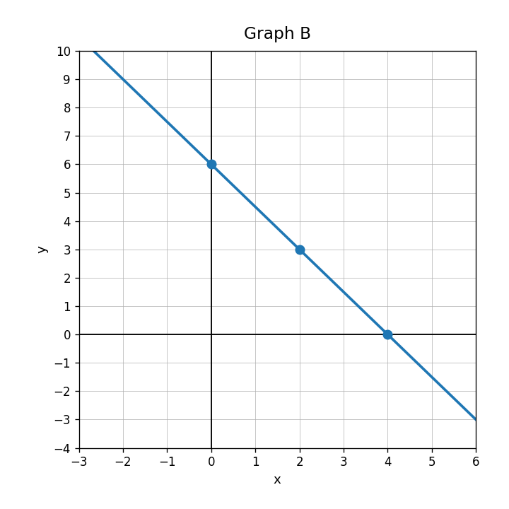
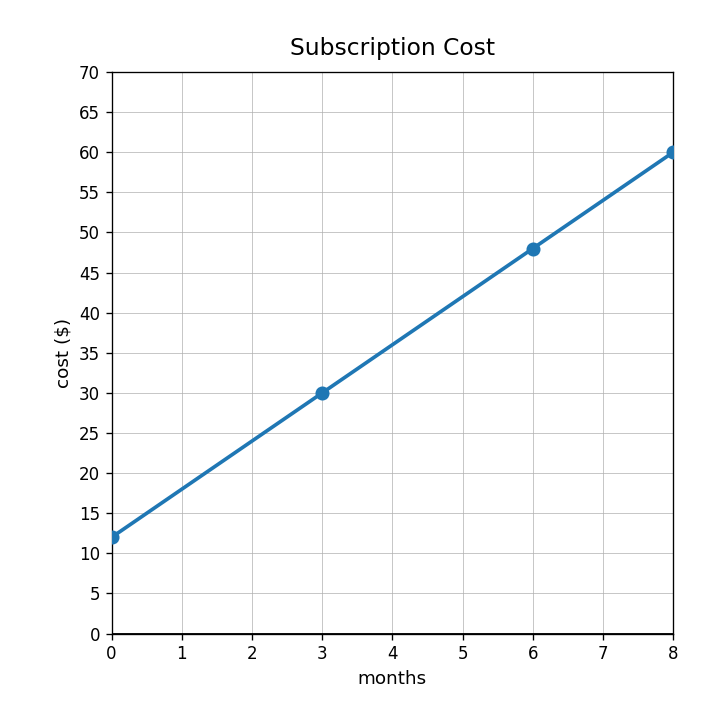
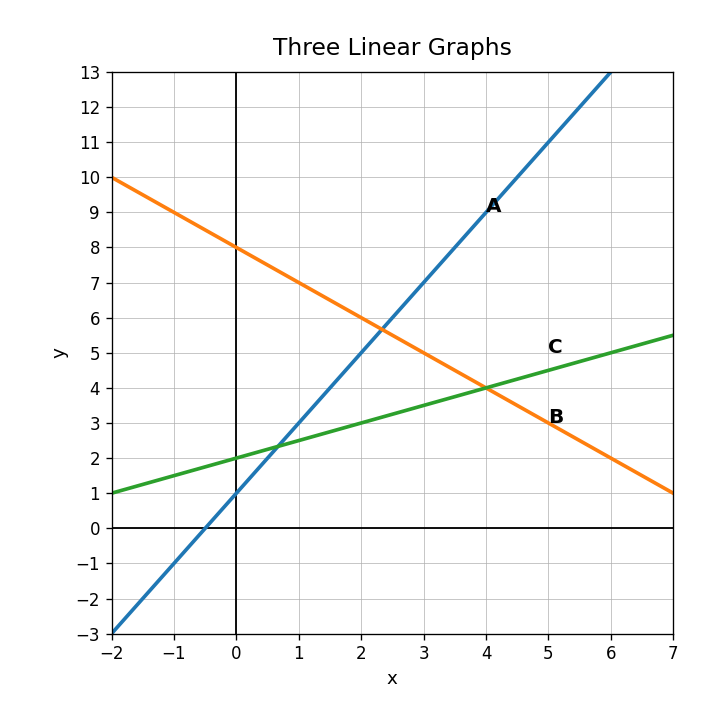
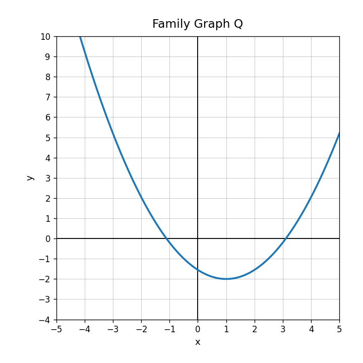

Use Graph B. Write the equation of the line.

A phone plan costs $18 plus $12 each month. Let $m$ be months and $C$ be total cost. What should the variables represent?
Write an equation for this linear relationship.
| weeks | 0 | 2 | 4 | 6 |
|---|---|---|---|---|
| dollars | 20 | 36 | 52 | 68 |
For the model $C=7m+15$, explain what the 7 and 15 could mean in a subscription context.
For $y=5x-1$, identify the slope.
Use the graph. Identify the starting value.

Does $y=-2x+9$ graph as an increasing or decreasing line?
When graphing $y=\frac{2}{3}x-4$, what point should you plot first?
Graph $y=2x+3$ and list three ordered pairs on the line.
Use the graph. Which line has the greatest slope? Which has the largest $y$-intercept?

Explain why the slope and $y$-intercept are enough information to graph a line.
A graph should have slope $-3$ and $y$-intercept $5$, but a student drew an increasing line through $(0,5)$. Describe how to revise the graph.
Identify the function family shown by the U-shaped graph.

Which family often has a U-shape?
Classify each equation as linear or nonlinear: $y=4x-2$, $y=|x|+1$, $y=x^2$.
A student says $y=x^2+3$ is linear because it has an $x$. Critique the statement.